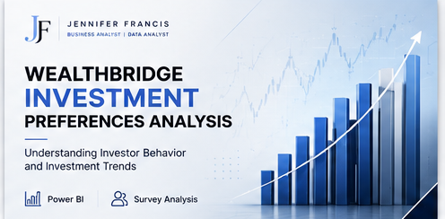
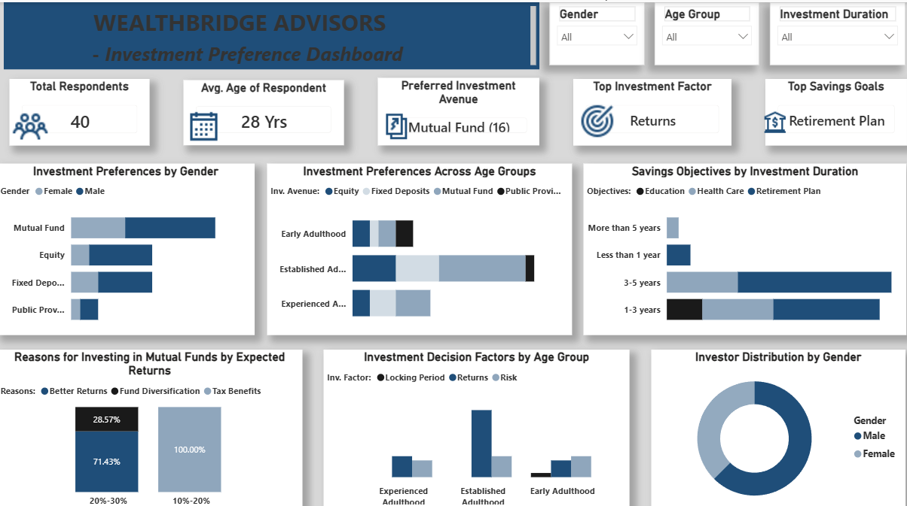

Cleaning a messy investor survey and finding the KPIs that actually predict what an investor does — not just what they say they'll do.

WealthBridge Advisors had survey responses from 40 investors but no structured way to answer the questions that actually mattered to their advisory business: which investment avenues do people actually prefer, does that preference shift by age group, and which factors are really driving the decision — returns, risk, or something else?
I cleaned the raw survey export in Excel, defined six core business questions upfront, then built a Power BI dashboard to answer each one visually rather than burying the findings in a written report.
The finished Power BI dashboard breaking down investment preference by gender, age group, and decision driver.

Mutual funds emerged as the clear preferred avenue overall, but the age-group breakdown showed "Established Adulthood" respondents spreading across a much wider mix of avenues than younger or more experienced groups — a segmentation insight a single top-line "most people prefer X" statistic would have completely hidden. Retirement planning also stood out as the dominant savings goal tied to longer investment durations, giving WealthBridge a clearer signal for how to frame advisory conversations by life stage.
Want the full breakdown — queries, data model, or wireframes?
View full repo on GitHub